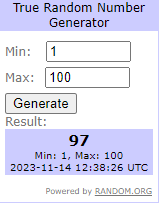
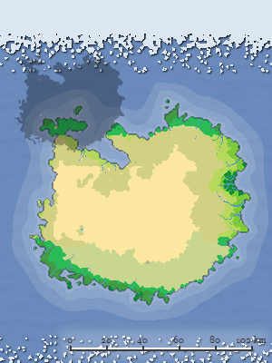

以下为个人已使用网站推荐
在我创作安科的过程中，我遇见了许多问题。在网上搜索后，我使用了以下网站来创作我的安科内容
其中有生成随机数的网站，生成虚拟世界地图的网站，生成小地图的网站
-

使用的随机数生成网站,特点为生成的随机数均为真随机
在我创作安科的过程中我也看了一些其他人写的安科，其中有一个安科使用的随机方式就是random.org。以既然要随机，那就要真随机的思想，我在我所有的安科中均使用其出随机数 ……点击查看详情
-

使用的世界地图随机生成网站,特点为可调节的选项极多，适合生成一个虚构世界地图
在创作安科的过程中，我思考过应该如何设计地图，在进行一系列搜索后，我搜索到了以下的网站，通过调试各个参数，成功创建了一个世界地图 ……点击查看详情
-

使用的小地图随机生成网站,特点为精细化，分成的类别较多，有村庄，城市，地牢等
创建了世界地图后，我仔细看了其中提供的地图元素，其中的地牢元素是根据另一个网站生成的单图地牢，城市也是如此，根据这些元素，我了解到了这一系列的地图生成网站 ……点击查看详情